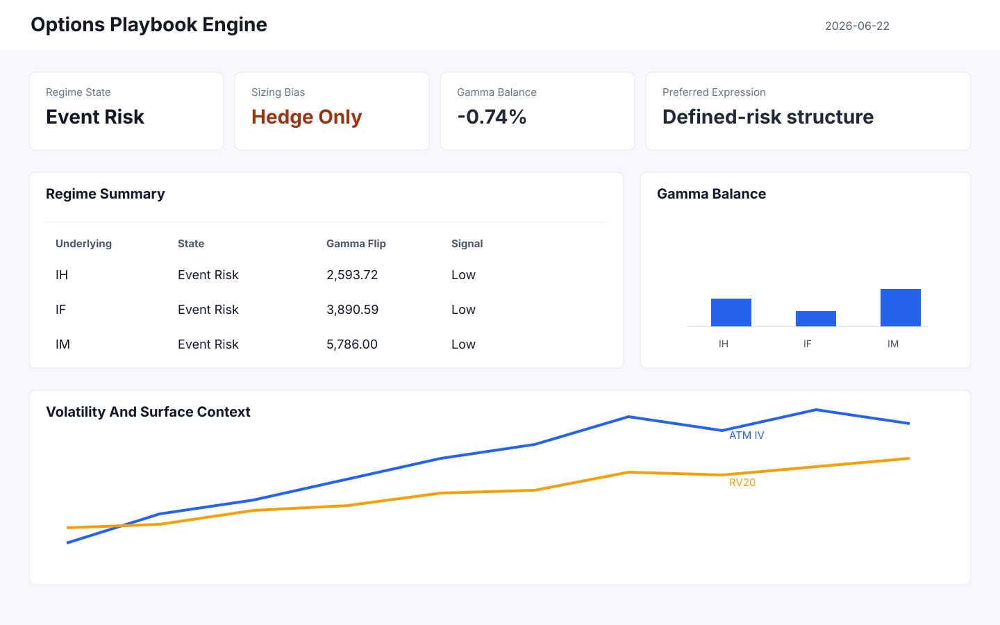
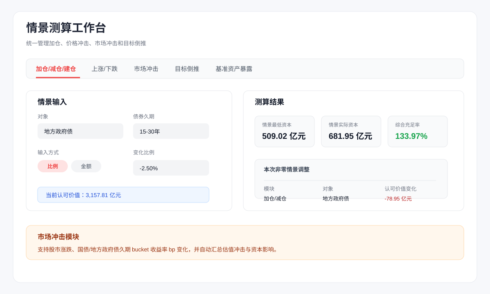
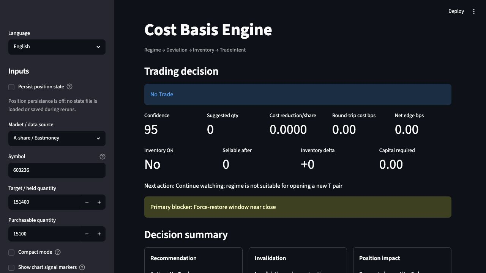

A
Market Regime
识别市场状态、波动结构和风险开关。它回答的是：今天更像趋势、震荡、钉住、挤压，还是事件风险。
Far From Exact
面向市场风向、期权结构、偿付能力、组合复盘和交易纪律的本地化研究系统。 它们不替我下单，而是固定数据口径、暴露假设、记录判断，并在事后复盘。
I do not believe a single model can predict the market. I care more about fixing the data cut, exposing assumptions, recording decisions, and reviewing them later.
我不相信一个万能模型能预测市场。我更相信：固定数据口径、暴露假设、记录判断、事后复盘。 这些系统服务于投资中最脆弱的部分：模型开始失效，而人开始情绪化的时候。
先保存 Excel 底稿、本地行情、期权链和外部数据，避免判断被实时噪音牵着走。
统一字段、口径、分类和资产映射，让后续观点能追溯到同一套证据。
用规则引擎处理阈值、风险闸门、库存约束、无偷看日期和情景假设。
记录信号、阻断理由、操作结果和复盘备注，让信心来自审计，而不是感觉。
Systems Map
首页不按项目数量展开，而按判断场景组织：市场状态、资本风险、盘中纪律。
识别市场状态、波动结构和风险开关。它回答的是：今天更像趋势、震荡、钉住、挤压，还是事件风险。
把资产配置、偿付能力、组合证据和投资备忘录做成可审计工作台。它回答的是：风险从哪里来，证据在哪里。
用工具约束盘中行为，避免把研究结论滑向情绪交易。它回答的是：条件是否真的满足，还是我只是想动手。
Selected Decision Engines
每个系统都被设计成一个判断场景：它解决什么问题，什么时候打开，以及它明确拒绝做什么。
盘前市场风向系统，把资金、利率、海外风险和期权结构压成可审计的状态判断。

把期权链结构变成每日可复盘的市场状态、触发价位和风险提示。

保险资金资产配置和偿付能力敏感性工作台，用来解释资本、最低资本和充足率变化。

单股票盘中持仓降本研究台，用费用、滑点、库存和证据约束一次操作是否值得做。
Public Repo Index
Catalog 只是索引，不是首页叙事的中心。完整链接保留在这里，方便从一个入口进入所有 public repos。
组合管理月度复盘、账户拆解、资产证据和数据质量检查。
Open保险资金资产配置变化对最低资本和充足率的敏感性测算。
OpenA 股盘前市场风向、趋势日概率、风险硬标记和回测诊断。
Open单股票盘中降本研究、库存约束、费用滑点和执行复盘。
OpenA 股指数期权 GEX、gamma flip、regime 和 playbook 引擎。
Open浏览器端期权 Greeks 与波动率训练游戏，覆盖组合搭建、市场路径、风险预算和 P&L 归因复盘。
Open白糖和棕榈油天气主题、价格确认和风险预算监控面板。
Open中国股指期权 long-gamma、事件分类、DTE 和退出规则研究实验室。
Open基于 PySide6 和 pyqtgraph 的股指期货 / 指数期权监控 MVP。
OpenWindPy 行业 ETF 轮动研究看板，覆盖取数、回测和结果浏览。
Open从标准 Excel 模板生成 LBO / investment memo、回报桥和敏感性表。
Open网页雀魂辅助脚本，聚焦可见状态捕捉、调试检查和手牌分析。
Open